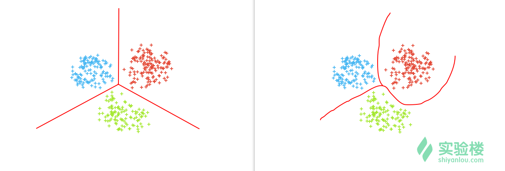
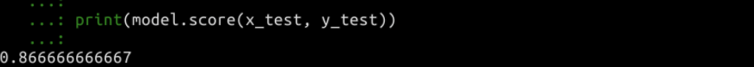
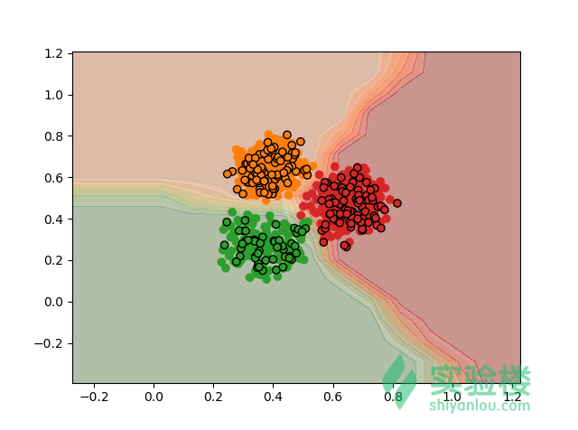
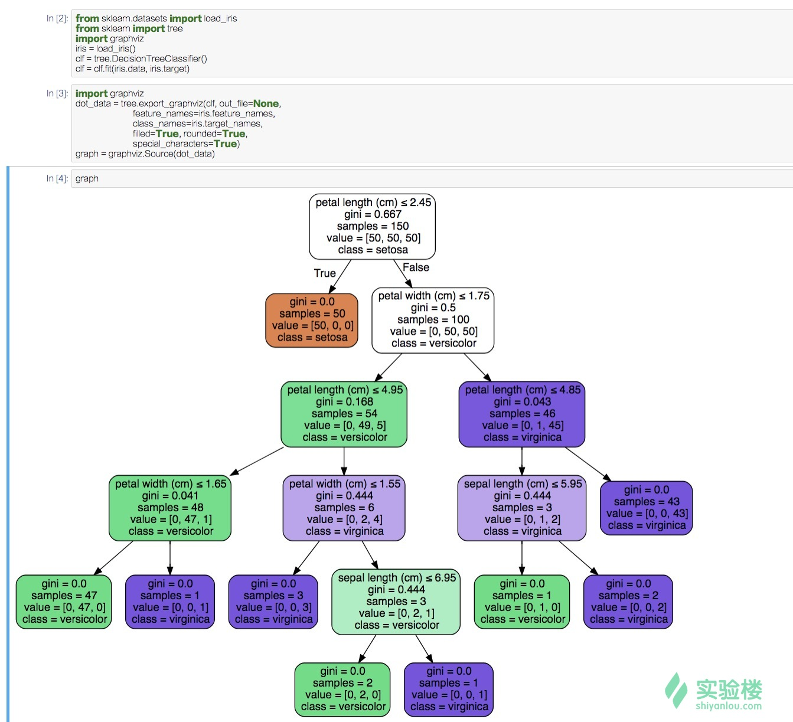

本实验为实验楼训练营课程 《Python 数据分析入门与进阶》的第五节，在该章节中我们将谈论数据分析过程中遇到的分类问题。
知识点
- 线性和非线性分类
- 支持向量机
- 决策树
- 随机森林
- 神经网络
分类问题概述
前面，我们已经讨论了关于数据预处理的一些细节。而在数据分析实战中，我们面对的一项重要工作，就是对数据进行分类。
举个例子，如果你拿到了一份来自电力部门的数据集，里面包含了一个城市的个人及企业每个月的用电数据，缴费数据等。我们就可以使用这份数据去对个人用户进行信用评估分类，调整不同类别用户的电卡授信额度，对高概率拖欠电费用户每月进行短信催缴提醒。我们也可以对企业用电进行分析，根据用电量和用电时段进行分类，然后做一些保障性供电的方案。这里面就涉及到大量的数据分类应用。
除此之外，像深度学习中会遇到的图像识别也是分类问题的应用。判断一张照片中的主体是猫还是狗？这都是典型的分类问题。生活中，像上面例子的情况还非常之多，几乎每个行业都会面临大量需要分类的问题。分类问题也是我们在数据分析中，遇到频率最高的问题。
程序如何进行一个简单分类？
在讨论各种分类方法前，我想先讨论一个可以帮助入门用户的问题，那就是程序如何进行一个简单的分类？
首先，我们回想一下人是如何在生活中完成事物分类的。例如区分房子和车？其实，当我们人在区分事物时，一般是抓住了一个或多个特征。例如，车有轮子、金属外壳、挡风玻璃等。所以，特征是对事物分类的关键要素。
当程序在进行分类是，它也是抓住了特征，只是这里的特征和我们所看到的特征有一些区别。一般情况下，我们看到的是图像，而程序看到的是数值。
如果我们想让程序来区分房子和车，最简单的方法就是先确定它们具有的共同特征。例如，物体都包含长度和高度。然后，我们让程序记录下一些数据（训练数据）。
| 类别 | 长度（米） | 高度（米） |
|---|---|---|
| 房1 | 53 | 92 |
| 房2 | 41 | 56 |
| 房3 | 62 | 87 |
| 车1 | 2.5 | 1 |
| 车2 | 3 | 1.2 |
| 车3 | 3.2 | 1.5 |
然后，我们现在有一个未知物体，它的宽度为 30，高度为 40。让程序判断到底是车？还是房子？
程序可以将训练数据的长度看作 X 坐标，高度看作 Y坐标。然后将这些数据映射到 2 维平面空间中去。
接下来，程序可能会用到一种叫线性分类的方法，也就是通过一条直线去划分训练数据。比如下面这条直线。
红色直线上方的区域为房子，而下方为汽车。于是，当我们去判断一个新的物体时，我们就可以将其坐标落向该平面，最终得到它的分类。
现在，这个新物体的坐标落在了房子的区域，程序最终会将此物体分类为房子。
程序完成分类具备的要素
通过上面的介绍，我们已经对分类问题有了初步的认识。于是，我们总结一下程序完成分类所具备的要素：
1. 训练数据。训练数据是程序完成分类的参考依据，必不可少。我们人在用观察完成分类时，训练数据其实就是依靠着记忆。
2. 分类算法。分类算法，其实就是那一条「红线」的位置，它决定了落上去的新事物类别。在上面的线性分类中，我们用直线划分区域。我们也可以用曲线，甚至在高维空间中用曲面划分区域。
有了这两点之后，我们就可以进行分类了。
分类问题划分
在了解分类算法前，我们先总结一下常见的分类方法。对于二维平面来讲，一般情况下，我们面临的分类问题有两大类：
1. 二分类问题。二分类，故名思意就是只存在两个类别。例如：红和蓝、猫和狗等。针对这类问题，我们可以通过一条直线划分（线性分类），或者一条曲线划分（非线性分类）。
2. 多分类问题。多分类，即存在多个类别。那么，我们可以用多条直线，或者多条曲线完成分类。

如果特征映射突破二维，进入三维甚至更高维度。我们就只能用超平面或者超曲面完成分类。
常见的分类算法
有了上面的基础知识，我们就可以正式开始学习分类算法了。学习之前，请先下载数据并解压：
wget http://labfile.oss.aliyuncs.com/courses/764/data05.zip
# 解压
unzip data05.zip
.
├── los.csv
├── one_class_data.csv
├── three_class_data.csv
├── two_class_data.csv
├── two_class_data_normal.csv
└── zoo.csv
感知机
感知机是我们要介绍的第一种分类算法。感知机是 1957 年就被提出来的算法，他是后面要介绍的神经网络以及支持向量机的基础。
感知机的结构非常简单，我们这里通过对它的几何介绍来认识感知机。感知机及像我们上面提到的车和房的分类例子，通过 w*x + b = 0 这样一条直线将二维空间划分为两个区域，落在这两个区域中的点被归为正类和负类。
有人可能会疑惑，如上图所示，划分两个区域的直线可能有多条，那么感知机会选取哪一条直线呢？
这就要谈到学习算法的学习策略了。感知机的学习策略是通过极小化下面的损失函数来选取最终的直线：
该损失函数表达的含义是误分类点到分离平面的总距离和。也就是说，误分类点越少越好，误分类点里分离平面的总距离和越小越好。
下面，我们动手实现感知机分类模型：
我们先导入一个示例数据集，然后画出该数据集的图像。
from matplotlib import pyplot as plt
import pandas as pd
# 读取数据
data = pd.read_csv("two_class_data.csv", header=0)
# 读取数据列
x = data['x']
y = data['y']
c = data['class']
# 绘制散点图，c 参数用于分类着色
plt.scatter(x, y, c=c)
plt.show()
我们可以看到，该数据集是一个拥有明显二分类特征的数据集。
接下来，使用 Scikit-learn提供的感知机方法来对上面的数据集进行分类效果测试。
执行命令行安装sklearn:
$ sudo pip3 install sklearn
from matplotlib import pyplot as plt
import pandas as pd
from sklearn.model_selection import train_test_split
from sklearn.linear_model import Perceptron
# 导入数据
data = pd.read_csv("two_class_data.csv", header=0)
# 定义特征变量和目标变量
feature = data[['x', 'y']].values
target = data['class'].values
# 对数据集进行切分，70% 为训练集，30% 为测试集。
x_train, x_test, y_train, y_test = train_test_split(feature, target, test_size=0.3, random_state=50)
# 构建模型
model = Perceptron()
# 训练模型
model.fit(x_train, y_train)
# 预测
results = model.predict(x_test)
# 以默认样式绘制训练数据
plt.scatter(x_train[:, 0], x_train[:, 1], alpha=0.3)
# 以方块样式绘制测试数据
plt.scatter(x_test[:, 0], x_test[:, 1], marker=',', c=y_test)
# 将预测结果用标签样式标注在测试数据左上方
for i, txt in enumerate(results):
plt.annotate(txt, (x_test[:, 0][i], x_test[:, 1][i]))
plt.show()
我们可以看到，测试集中有两个数据被错误分类。绿色的方框被标记为了 C2。
除了看图，当然可以直接导出我们的分类评估数据：
print(model.score(x_test, y_test))
结果显示，使用验证集的正确分类率为：0.990196078431。 
当然，这里如此高的分类正确率，很大程度是因为我们给的示例数据很好。感知机作为一种十分基础的分类方法，在实际数据分类和预测中并不常用。因为，实战过程中的数据肯定没有示例数据呈现出的线性可分性。不信的话，可以拿示例数据中的 two_class_data_normal.csv数据文件再试一下。
当然，这并不意味着感知机不重要。理解感知机，可以帮助我们更好地理解后面的支持向量机算法和神经网络算法。
支持向量机（SVM）
支持向量机是一种非常常用，适用性非常广的分类方法。与感知机不同的是，支持向量机不仅可以用于线性分类，还可以用于非线性分类。
支持向量机由 Vapnik 于 1963年提出，与感知机不同的地方在于，支持向量机引入了「最大间隔」的思想来划定分割平面。
这里所说的「最大间隔」如下图所示。
对于上图所示的黑点和白点两个类别而言，我们通过寻找距离两种类别间隔最大的平面 w*x-b=0 来作为分割平面。其中，实线与两条虚线的距离相等，且最大。
落在两条虚线上的白点或黑点被我们称之为「支持向量」，这也就是支持向量机的名字来源。
现在，我们通过支持向量机来重新对刚刚使用感知机达到 99% 的 two_class_data.csv 进行重新分类：
你只需要更改两行代码，分别是导入支持向量机 SVC 和使用 SCV 构建模型。
from matplotlib import pyplot as plt
import pandas as pd
from sklearn.model_selection import train_test_split
# 导入支持向量机
from sklearn.svm import SVC
# 导入数据
data = pd.read_csv("two_class_data.csv", header=0)
# 定义特征变量和目标变量
feature = data[['x', 'y']].values
target = data['class'].values
# 对数据集进行切分，70% 为训练集，30% 为测试集。
x_train, x_test, y_train, y_test = train_test_split(feature, target, test_size=0.3, random_state=50)
# 构建模型
model = SVC()
# 训练模型
model.fit(x_train, y_train)
# 预测
results = model.predict(x_test)
# 以默认样式绘制训练数据
plt.scatter(x_train[:, 0], x_train[:, 1], alpha=0.3)
# 以方块样式绘制测试数据
plt.scatter(x_test[:, 0], x_test[:, 1], marker=',', c=y_test)
# 将预测结果用标签样式标注在测试数据左上方
for i, txt in enumerate(results):
plt.annotate(txt, (x_test[:, 0][i], x_test[:, 1][i]))
plt.show()
测试结果如下：
此时，分类正确率已经到达 100%。
除了线性分类，支持向量机还通过引入核函数来解决非线性分类的问题。我们依旧从几何角度来解释：
上面这三张图片演示了支持向量机解决非线性分类的过程。第一张中，红色小球和蓝色小球无法使用一条直线完成分类，于是我们通过核技巧将其映射到三维空间中（第二张），然后通过绿色的平面完成分类。最终再投影到二维空间中，平面投影下来就变成了一条曲线。
在将特征映射到高维空间的过程中，我们常常会用到多种核函数，包括：线性核函数、多项式核函数、高斯径向基核函数等。其中，最常用的就算是高斯径向基核函数了，也简称为 RBF 核。
下面，我们通过支持向量机完成一个非线性分类的任务。这里的示例数据 zoo.csv来源于 UCI 数据网站。
zoo.csv 叫动物园数据集，总共有 18 列，第一列为动物名称，最后一列为动物分类。
数据集中间的 16列为动物的特征，比如：是否有毛发、是否下蛋等。除了腿的数量为数值型，其余特征列均为布尔型数据。数据集中的动物共有 7类，通过最后一列的数字表示。
接下来，我们尝试通过支持向量机完成这一个非线性的多分类任务。第一步依旧是导入 csv数据文件。然后定义其中 16 列为特征，最后一列为目标值。
import pandas as pd
from sklearn.model_selection import train_test_split
from sklearn.svm import SVC
from sklearn.decomposition import PCA
# 导入数据
data = pd.read_csv('zoo.csv', header=0)
# 定义特征变量和目标变量
feature = data.iloc[:, 1:17].values
target = data['type'].values
# 对数据集进行切分，70% 为训练集，30% 为测试集。
x_train, x_test, y_train, y_test = train_test_split(feature, target, test_size=0.3, random_state=50)
# 构建模型
model = SVC()
# 训练模型
model.fit(x_train, y_train)
# 预测
results = model.predict(x_test)
print(model.score(x_test, y_test))
我们测试集的正确分类率为 0.867：

我们有 16个特征参与运算，但是得出的正确率并不高。其中一个主要原因为，这里的数据集太小了，总共才 100 行。
由于存在 16 个特征，所以无法进行可视化。下面，介绍一种叫做 PCA` 降维的方法，它的作用是缩减特征的数量，从而更方便可视化呈现。
from matplotlib import pyplot as plt
import pandas as pd
from sklearn.model_selection import train_test_split
from sklearn.svm import SVC
from sklearn.decomposition import PCA
# 导入数据
data = pd.read_csv('zoo.csv', header=0)
# 定义特征变量和目标变量
feature = data.iloc[:, 1:17].values
target = data['type'].values
# 使用 PCA 降维至 2
pca = PCA(n_components=2)
feature_pca = pca.fit_transform(feature)
# 对数据集进行切分，70% 为训练集，30% 为测试集。
x_train, x_test, y_train, y_test = train_test_split(feature_pca, target, test_size=0.3, random_state=50)
# 构建模型
model = SVC()
# 训练模型
model.fit(x_train, y_train)
# 预测
results = model.predict(x_test)
print(model.score(x_test, y_test))
# 以默认样式绘制训练数据
plt.scatter(x_train[:, 0], x_train[:, 1], alpha=0.3)
# 以方块样式绘制测试数据
plt.scatter(x_test[:, 0], x_test[:, 1], marker=',', c=y_test)
# 将预测结果用标签样式标注在测试数据左上方
for i, txt in enumerate(results):
plt.annotate(txt, (x_test[:, 0][i], x_test[:, 1][i]))
plt.show()
当特征降为2维时，我们就可以通过平面图画出来了。
你可能会纳闷，这里得出的准确度竟然变成了 0.833，比先前的 0.867 还要低。究其原因，当然是我们的特征数量减少了，这可能会影响到准确度。
K-近邻法（KNN）
K 近邻是一种十分常用的分类方法。对于 KNN，我们依旧通过一张几何图像来解释：
我们的数据集如上图所示的 A 类和 B 类。现在，我们新输入一个数据（五角星），要判断该数据属于哪一个类？
KNN 的方法是以该数据为圆心，画一个圆。圆的半径不确定，可大可小。当它为图示中的内圆时，B 类数据多余 A 类，所以五角星数据属于 B 类。当为大圆时，A 类数据多于 B 类，所以五角星属于 A 类。而圆的大小，取决于 K 值。而 K 指的是与新数据最近邻的 K 个值。
于是，我们总结一下 KNN中的三个关键要素：
1. K 值的大小。K 值一般通过测试数据交叉验证来选择。 2. 距离的度量。新数据与最近邻数据之间的距离计算方式，有欧式距离或者曼哈顿距离等。3. 分类决策规则。KNN 的决策规则为多数表决，即新数据属于圆圈中占比最大的一类。
这一次，我们使用一个由3种类别构成的数据集 three_class_data.csv测试，并将KNN的决策边界绘制出来。
from matplotlib import pyplot as plt
from matplotlib.colors import ListedColormap
import pandas as pd
import numpy as np
from sklearn.model_selection import train_test_split
from sklearn.neighbors import KNeighborsClassifier
# 导入数据
data = pd.read_csv('three_class_data.csv', header=0)
# 定义特征变量和目标变量
feature = data[['x', 'y']].values
target = data['class'].values
# 对数据集进行切分，70% 为训练集，30% 为测试集。
x_train, x_test, y_train, y_test = train_test_split(feature, target, test_size=0.3, random_state=50)
# 构建模型
model = KNeighborsClassifier()
# 训练模型
model.fit(x_train, y_train)
# 预测
results = model.predict(x_test)
print(model.score(x_test, y_test))
# 绘制决策边界等高线图
cm0 = plt.cm.Oranges
cm1 = plt.cm.Greens
cm2 = plt.cm.Reds
cm_color = ListedColormap(['red', 'yellow'])
x_min, x_max = data['x'].min() - .5, data['x'].max() + .5
y_min, y_max = data['y'].min() - .5, data['y'].max() + .5
xx, yy = np.meshgrid(np.arange(x_min, x_max, .1),
np.arange(y_min, y_max, .1))
Z0 = model.predict_proba(np.c_[xx.ravel(), yy.ravel()])[:, 0]
Z1 = model.predict_proba(np.c_[xx.ravel(), yy.ravel()])[:, 1]
Z2 = model.predict_proba(np.c_[xx.ravel(), yy.ravel()])[:, 2]
Z0 = Z0.reshape(xx.shape)
Z1 = Z1.reshape(xx.shape)
Z2 = Z2.reshape(xx.shape)
plt.contourf(xx, yy, Z0, cmap=cm0, alpha=.9)
plt.contourf(xx, yy, Z1, cmap=cm1, alpha=.5)
plt.contourf(xx, yy, Z2, cmap=cm2, alpha=.4)
# 绘制训练集和测试集
plt.scatter(x_train[:, 0], x_train[:, 1], c=y_train, cmap=cm_color)
plt.scatter(x_test[:, 0], x_test[:, 1], c=y_test, cmap=cm_color, edgecolors='black')
plt.show()
由于示例数据集界线清晰，所以分类的正确率为 100%。我们主要是看一下 KNN 的决策边界：

图中，颜色越深的地方代表属于某一类别的可能性越高。
决策树和随机森林
除了支持向量机和 KNN之外，决策树和随机森林也是非常不错的分类方法。如果你没有听说过随机森林，就把它当作是用决策树组成的森林就好了。所以这里，我们会将两种方法放在一起介绍。
决策树理解起来非常简单，义务教育阶段其实就已经接触过决策树的概念了。在决策分析中，我们可以用一棵决策树可以形象地展示决策过程，而决策树中，就类似于 if-then 规则的集合。例如，我们用下面的决策树来区分西瓜的好与坏：
在用决策时进行分类时，我们从跟节点出发，对实例的特征进行测试，然后将其分别分给不同的子节点。然后对子节点重复上面的步骤，使得最终所有的实例被分给叶节点中。
执行决策树算法，一般分为三步：
1. 特征选项。
特性选择及选择判断规则。例如上面判断西瓜好坏的决策树中，我们的特征为触感、敲声。特征选择是决策树建立前完成的工作，它决定了决策树的最终形状。一般情况下，我们依据3种指标来选择特征，分别是信息增益、信息增益比、以及基尼指数。
其中，依据信息增益来选择特征，是一种来源于信息论和概率统计中的方法。我们通过判断某一特征对决策树前后影响的信息差值，从而选出最关键的特征。这种依据信息增益来选择特征的算法，也被称作 ID3 算法。
后来，我们发现信息增益在划分训练数据特征时，容易偏向取值较多的特征。于是，我们改进了 ID3算法，通过信息增益比值来选择，发展出了 C4.5算法。除此之外，还有一种叫 CART 的生成算法，它利用了基尼指数最小化的原则。
2. 树的生成。
选择完特征之后，我们就通过这些特征来生成一颗完整的决策树。生成的原则是，所有训练数据都能分配到相应的叶节点。
3. 树的剪枝。
一颗完整的决策树，使得训练数据得到有效的划分。但是，你会发现完整的决策树往往对于测试数据的效果并不好。这就出现了过度拟合的问题。过度拟合，指模型对训练数据的效果很好，但是对测试数据的效果差，泛化能力较弱。
解决决策树过度拟合的方法是对决策树进行剪枝。剪枝，也就是去掉一些叶节点。剪枝并不是随意乱剪，它的依据是，剪枝前和剪枝后的决策树整体损失函数最小。
对于决策树的演示，我们用到了著名的鸢尾花 iris 数据集。
iris是机器学习领域一个非常经典的分类数据集，它总共包含150行数据。每一行数据由4 个特征值及一个目标值组成。其中 4` 个特征值分别为：萼片长度、萼片宽度、花瓣长度、花瓣宽度。而目标值及为三种不同类别的鸢尾花，分别为：Iris Setosa，Iris Versicolour，Iris Virginica。
iris 数据集无需导入 csv 文件，作为常用的基准数据集之一，sklearn 提供了相应的导入方法。如果你对该数据集不太熟悉，可以先输出数据看一看。
from sklearn import datasets
# 载入数据集
iris = datasets.load_iris()
print(iris.data, iris.target)
接下来，我们构建 iris 分类决策树。
from sklearn.datasets import load_iris
from sklearn import tree
# 导入数据
iris = load_iris()
# 建立模型
model = tree.DecisionTreeClassifier()
# 模型训练
clf = model.fit(iris.data, iris.target)
完成模型训练，其实就建立起一颗决策树了。然后，这里我们通过 graphviz 模块，将决策树绘制出来。
首先在实验楼在线环境安装该模块：
sudo apt-get install graphviz
sudo /home/shiyanlou/anaconda3/bin/pip install graphviz
接下来绘制决策树。由于在线环境限制，我们可以将其保存为pdf文件。
import graphviz
dot_data = tree.export_graphviz(clf, out_file=None)
graph = graphviz.Source(dot_data)
graph.render("iris")
到主目录下找到该文件，然后选择火狐浏览器打开。我们就可以看到决策树是如何分类鸢尾花的了。
如果你在线下使用 jupyter notebook 来完成，可以绘制出更漂亮、直观的图像。

随机森林与决策树不同的地方在用，它不只是建立一颗树，而是建立一堆树。与决策树不同，随机森林每次只从全部数据集中随机抽取一部分数据用于生成树。另外，随机森林在生成树的时候不会剪枝。
随机森林的优点多多，例如：它可以处理大量的数据；它可以在特征不均衡时，依然维持较高的准确度；随机森林学习速度快，一般情况下，结果比单纯应用决策树要好。
我们分别使用随机森林和决策树算法针对上面的 iris 数据集进行分类，看一看准确度。
from sklearn.datasets import load_iris
from sklearn.tree import DecisionTreeClassifier
from sklearn.ensemble import RandomForestClassifier
# 导入数据
iris = load_iris()
x_train = iris.data[:120]
x_test = iris.data[120:]
y_train = iris.target[:120]
y_test = iris.target[120:]
# 建立模型
model_tree = DecisionTreeClassifier(random_state=10)
model_random = RandomForestClassifier(random_state=10)
# 训练模型并验证
model_tree.fit(x_train, y_train)
s1 = model_tree.score(x_test, y_test)
model_random.fit(x_train, y_train)
s2 = model_random.score(x_test, y_test)
print('DecisionTree:', s1)
print('RandomForest:', s2)
结果显示，随机森林的正确分类率比决策树高 10个百分点。
神经网络模型
除了上面谈到的 KNN，决策树，随机森林，支持向量机这些分类方法，其实还有常见的分类方法，如最大熵模型、朴素贝叶斯等。而对于这两种方法，涉及到较多的数据理论，讨论起来比较枯燥。
最后，我们简单地介绍一下人工神经网络。因为深度学习的火爆，神经网络从而进入了更多人的视野。实际上，神经网络诞生的非常之早，早在 1943 年，沃伦·麦卡洛克和沃尔特·皮茨基于数学和一种称为阈值逻辑的算法，创造了一种神经网络的计算模型。
人工神经网络，目前发展迅速，涉及到的变种太多。这里，我们只是简单的入门，如果要覆盖神经网络全部内容，没有几千页是不行的。
一个含单个隐含层的人工神经网络如下所示：
我们针对输入的特征，连接权重，然后得到输出。这样一个简单的结构，就构建了神经网络的拓扑关系。我们可以通过 sklearn 中提供的 neural_network 模块导入相应的分类器来实现神经网络。
入门神经网络，其实有一个更直观的工具。Google 提供了一个在线演示简单神经网络结构的网站 http://playground.tensorflow.org/ ，你可以自己动手感受神经网络的运作过程。
你可以调整神经网络的各种参数，添加特征输入类，添加隐含层和调整神经元。
神经网络是非常强大的一种学习方法，尤其是在面对海量数据的今天，神经网络能完成许多通过传统算法无法很好完成的图像分类、语音识别的任务。
实验总结
数据分析，不仅是通过统计和可视化将现有数据展示出来。除此之外，我们还要通过相应的手段和方法去发现规律，对未来趋势做出预测。这个部分，我们了解了常见的分类方法，并学习了通过 Scikit-Learn 去构建预测模型。如果，有了 pandas，matplotlib，scikit-learn 等简单易学的开源工具帮助，编程能力已经不再是数据分析的高门槛。面对数据，形成我们探索数据的思维，才是这个过程中最需要培养的部分。